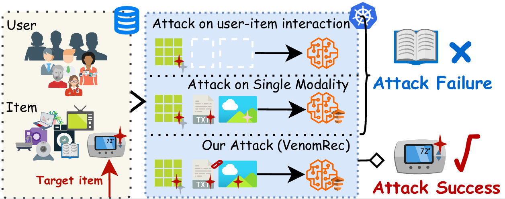
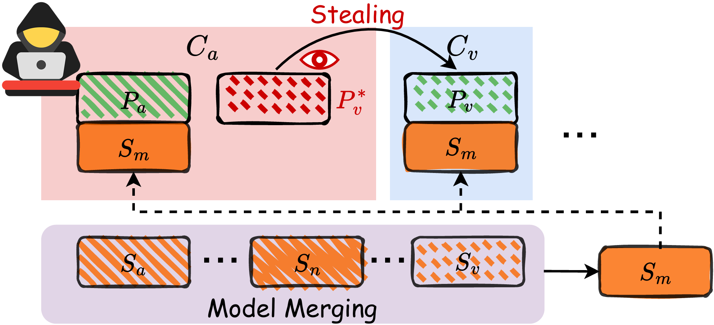
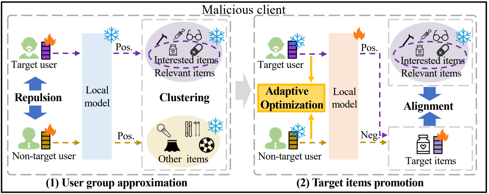
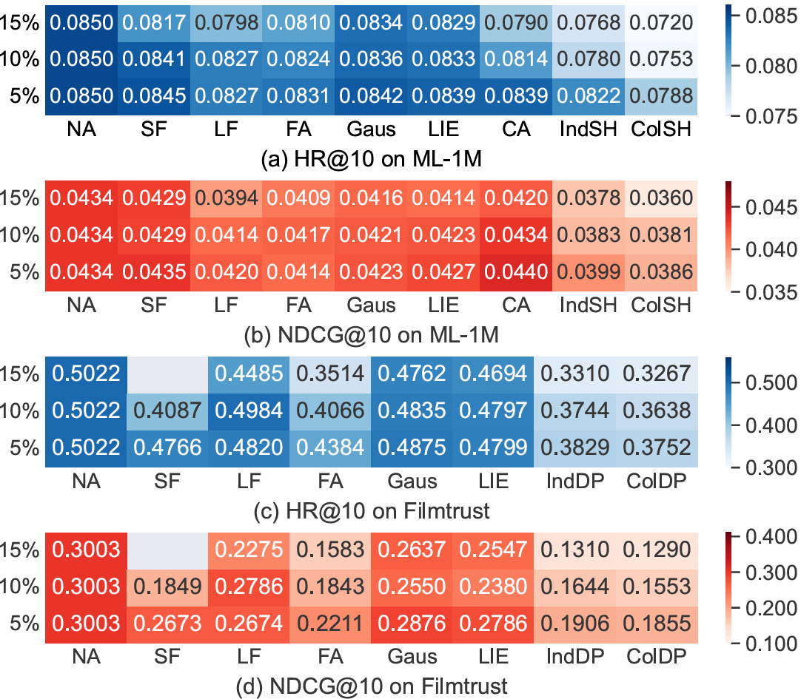

About Me
I am currently a Research Fellow at Nanyang Technological University (NTU), working with Prof. Wei Yang Bryan Lim and Prof. Cyril Leung in Midori Lab. Before this, I received my Ph.D. degree in 2025 from the School of Cyberspace Science and Technology at Beijing Jiaotong University, supervised by Prof. Jiqiang Liu and Prof. Wei Wang. From 2024 to 2025, I was a visiting student at Nanyang Technological University.
My research mainly focuses on Trustworthy AI, with a particular focus on poisoning attacks and defence mechanisms in distributed deep learning systems. Recently, my research has shifted toward trustworthiness in Multimodal LLM and Agent, where I explore potential vulnerabilities and develop robust defence mechanisms to enhance their integrity and user trust.
News
- May 2026🎉 Four papers are accepted by ICML 2026!
- Mar 2026🎉 Our work is accepted by WWW 2026!
- Dec 2025🎉 Our work is accepted by NeurIPS 2025!
- Oct 2024🎉 Our work is accepted by IEEE TIFS!
- Jul 2024🎉 Our work is accepted by ACM CCS 2024!
Selected Publications [Full List >>] [Google Scholar] [DBLP]




Patents & Monographs
- Local Differential Privacy Method for Government Data Sharing. CN112329056B. China Patent Assigned
- Method for Privacy Leak detection method For Vertical Federated Learning Based on Feature Embedding Analysis. CN116341004B. China Patent Granted
- Defence Method for Federated Learning Poisoning Attacks. CN116527393A. China Patent Granted
- Privacy-Preserving Method for POI Recommendation. CN117272370B. China Patent Granted
- Privacy Preserving Computation[M], People's Posts and Telecommunications Press, 2023. Contributed to the writing of Section 8 (Differential Privacy)
- Artificial Intelligence Security Assessment Technology[M], Hans Publishing House, 2023. Served as an Editorial Board Member
Research Projects
- Privacy Preserving Recommender System, Ant Group. PI
- Privacy Preserved Methods for Federated Recommendation, Central Universities Basic Scientific Research Business Fund Project. PI
- Privacy Preserved Methods for Government Data Sharing, Provincial Innovation Project. PI
- Artificial Intelligence System Security Testing and Robust Enhancement Software and Hardware Integration, National Major Project. Participated in Project Application, Management and Tech Research
- Research on key technologies for security detection and protection of artificial intelligence applications, National Major Project. Participated in Technology Research and Development
- Trustworthy Mechanism and Key Technologies of Urban Intelligent Systems, National Key R&D Program Project. Participated in Technology Research and Development
Invited Talks
- Nov 2025Security and Privacy in Personalised AI: From Federated to Multimodal LLM-based Recommender Systems, Institute of Science Tokyo, Tokyo, Japan.
- Oct 2024Not One Less: Exploring Interplay between User Profiles and Items in Untargeted Attacks against Federated Recommendation, ACM CCS 2024 Oral, Salt Lake City, The United States.
- Sep 2024Trustworthy AI-poisoning Attacks & Defence, Nanyang Technological University, Singapore.